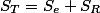
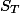
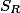
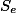
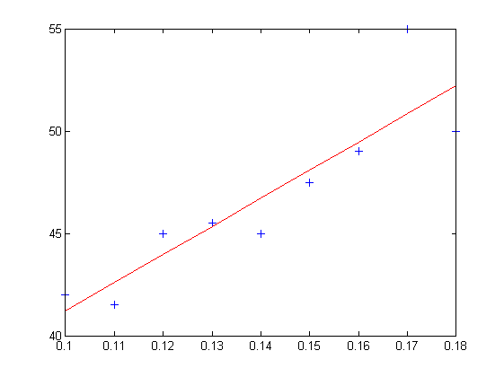
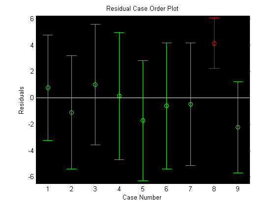
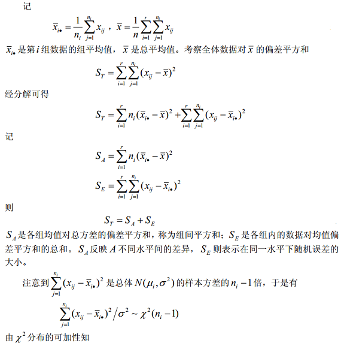
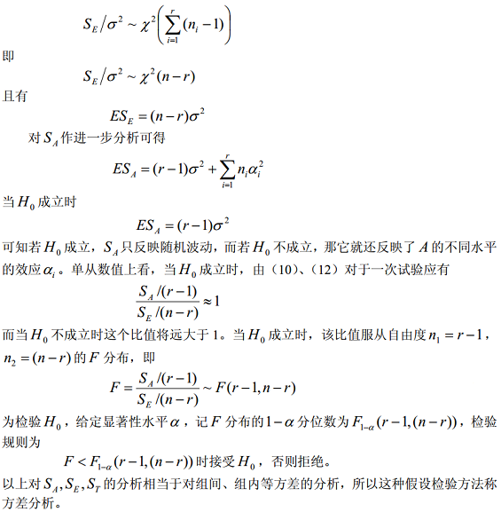
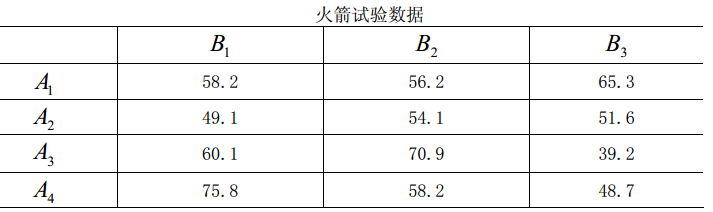
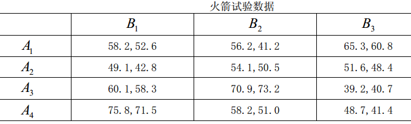

题记：时值我的北科研究生第一年下，选学《统计优化》课程，备考促学，成此笔记，以谨记。
要研究最大积雪深度x与灌溉面积y之间的关系，测试得到近10年的数据如下表：
使用线性回归的方法可以估计x与y之间的线性关系。
线性回归方程式：
对应的估计方程式为
线性回归完成的任务是，依据观测数据集(x1,y1),(x2,y2),...,(xn,yn)使用线性拟合估计回归方程中的参数a和b。a,b都为估计结果，原方程中的真实值一般用α和β表示。
为什么要做这种拟合呢？
答案是：为了预测。比如根据前期的股票数据拟合得到股票的变化趋势（当然股票的变化可就不是这么简单的线性关系了）。
线性回归的拟合过程使用最小二乘法，
最小二乘法的原理是：选择a,b的值，使得残差的平方和最小。
为什么是平方和最小，不是绝对值的和？答案是，绝对值也可以，但是，绝对值进行代数运算没有平方那样的方便，4次方又显得太复杂，数学中这种“转化化归”的思路表现得是那么的优美！
残差平方和Q，
求最小，方法有很多。代数方法是求导，还有一些运筹学优化的方法（梯度下降、牛顿法），这里只需要使用求导就OK了，
为表示方便，引入一些符号，
最终估计参数a与b的结果是：
自此，针对前面的例子，只要将观测数据带入上面表达式即可计算得到拟合之后的a和b。不妨试一试？
从线性函数的角度，b表示的拟合直线的斜率，不考虑数学的严谨性，从应用的角度，结果的b可以看成是离散点的斜率，表示变化趋势，b的绝对值越大，表示数据的变化越快。
线性回归的估计方法存在误差，误差的大小通过Q衡量。
考虑获取观测数据的实验中存在其它的影响因素，将这些因素全部考虑到e~N(0,δ^2)中，回归方程重写为
y = a + bx + e
由此计算估计量a与b的方差结果为，
a与b的方差不仅与δ和x的波动大小有关，而且还与观察数据的个数有关。在设计观测实验时，x的取值越分散，估计ab的误差就越小，数据量越大，估计量b的效果越好。这也许能为设计实验搜集数据提供某些指导。
拟合优度检验模型对样本观测值的拟合程度，其方法是构造一个可以表征拟合程度的指标，称为统计量，统计量是样本的函数。从检验对象中计算出该统计量的数值，然后与某一标准进行比较，得出检验结论。
这是又会问了，最小二乘法不是保证了模型最好的拟合样本观测值了吗？为什么还要检验拟合程度？
最小二乘法保证的是同一个样本集使用最小二乘法拟合程度最好，而拟合优度检验结果表示的是多个不同样本集各自进行拟合后对拟合效果的比较。比如，下面的直线方程都是使用最小二乘法拟合的结果，但二者对样本观测值的拟合程度显然不同。
为构造统计量，先定义三个表达式：
通过推倒可以发现：
表示观测值y1,y2,y3,...yn与它们的平均值的离差平方和，越大，则观测值的波动越大。因此称总离差平方和。
表示回归直线上点的纵坐标y1,y2,...,^yn与与观测值均值的离差平方和。所以称为回归平方和。反映出回归直线因素对的影响。
是最小二乘法中残差平方和Q的最小值，它是实际观测值yi与回归直线上的点(xi,yi)的纵坐标yi的离差平方和。是扣除线性影响外的剩余平方和，因此称为残差平方和。
显然，一个拟合得比较好的模型，与应该比较接近，而应该尽可能的小。因此，可以通过构造某种与的表达式作为拟合优度检验中的统计量。
因此，构造相关系数
不同的r值有不同的线性相关表示，如下图
结论：
当|r|->0时，表示x与y之间的线性关系不明显，不适合使用线性回归建模。反之，当|r|越接近1时，表示x与y之间的线性关系越密切。F值越小表示线性关系越密切，反之线性关系越弱。
|t|越大，x与y之间的线性关系越密切；反之，越小，x与y之间的线性关系越微弱。
不管是相关系数，还是F，或者t，都能用于描述x与y之间的线性相关程度。并且可以通过验证，这三种统计量用于下面的显著性检验是完全一致的。
显著性检验，
以开头“最大积雪深度x与灌溉面积y之间的关系”的线性关系是否显著为例，使用上面构造的统计量进行显著性检验的过程如下：
在当中，计算线性回归及显著性检验使用到如下的公式，下面的公式不用记住，使用时查询即可。
相关系数的查表参见相关系数显著性检验表
回归系数α以1-α为置信度的置信区间为
回归系数β以1-α为置信度的置信区间为
其中S都为，
使用最小二乘法做多元线性回归分析的函数为：
[b,bint,r,rint,stats] = regress(y,X,alpha);
% alpha 为显著性水平
% b bint 为回归系数估计值向量及其置信区间
% r rint 为残差向量及其置信区间，可用rcoplot(r,rint)绘图下面是一个使用Matlab做线性回归分析的实例：
EG:
x 0.10 0.11 0.12 0.13 0.14 0.15 0.16 0.17 0.18
y 42.0 41.5 45.0 45.5 45.0 47.5 49.0 55.0 50.0 Matlab代码如下：
clear all
clf
close all
% 绘制(X,Y)散点图
figure,
x=0.1:0.01:0.18;
y=[42,41.5,45.0,45.5,45.0,47.5,49.0,55.0,50.0];
plot(x,y,'+')
% 线性回归分析
x1=x';
y1=y';
x2=[ones(9,1),x1];
[b,bint,r,rint,stats]=regress(y1,x2);
% 绘制拟合直线
y = b(2)*x + b(1);
hold on,plot(x,y,'r');
% 绘制残差图
figure,rcoplot(r,rint);结果为拟合直线图和残差图如下：
 
在Matlab中还可以使用polyfit函数非常方便的对数据进行拟合，polyfit除了能进行线性拟合，还可以进行非线性的拟合。
使用polyfit拟合方法如下：
% 绘制(X,Y)散点图
figure,
x=0.1:0.01:0.18;
y=[42,41.5,45.0,45.5,45.0,47.5,49.0,55.0,50.0];
plot(x,y,'+');
% 绘制拟合直线
hold on,
p = polyfit(x',y',1);
y = p(1).*x + p(2);
plot(x,y2，'r');拟合结果与上面的一样。
回归分析的主要内容是通过试验或观测数据，寻找相关变量之间的统计规律性，再利用自变量的值有效预测因变量的可能取值。
其实际操作的步骤是：
如上图，对A1~A4共4种不同灯丝的灯泡进行抽样检测灯泡寿命，根据测试数据，现在要问：灯泡寿命是否与灯丝材料的不同有关。
问题特点有：
这就是方差分析问题：用数理统计分析试验结果、鉴别各因素对结果影响程度的方法称为方差分析（Analysis Of Variance），记作ANOVA。
其它因素不变，只考虑一个因素A，因素存在多个水平，在每个水平上做若干次实验，从实验结果推断是否该因素对指标有显著影响？这就是单因素的方差分析，上面的例子就是单因素方差分析的例子。
设因素A的r个水平为A1,A1,...,Ar，每个水平下的指标服从正态分布N(u1,δ2),N(u2,δ2),...,N(ur,δ2)。
实验数据的格式：
因子对指标是否有影响取决于指标的正态分布是否一致，如果有影响，则正态分布应该存在差异，而正态分布由均值和方差决定，假设中方差相同，因此各个水平下的正态分布均值直接决定因素是否对指标有影响。
所以，问题可以转化为假设检验，设
H0: u1=u2=u3=...=ur
检验结果如果拒绝原假设，则认为因素A对指标有显著影响，否则认为无显著影响。
设
u = (1/r)_1^a{ui}
αi = ui - u
则，H0假设改写成
H0: α1=α2=α3=...=αr=0
 
过对上面模型中相关参数进行计算，为计算分析方便，将结果填入下表中：
表中的Pr反映的就是>F值的概率，F值通过因素A均方除以误差均方获得。
因此，有
Matlab的输出结果即为上面的方差分析表，因此，用matlab很容易进行方差分析。
能否认为这三所小学五年级男学生的平均身高相同？取显著水平α=0.05.
假设H0: 这三所小学五年级男学生的平均身高相同。
data = [...
128.1 134.1 131.1 138.9 140.8 127.4; ...
150.3 147.9 136.8 126.0 150.7 155.8; ...
140.6 143.1 144.5 143.7 148.5 146.4...
];
data = data';
P=anova1(data); % 方差分析函数anova1Matlab程序的运行结果为：
∵ Pr=0.0275 < α ∴ 拒绝H0，即不能认为这三所小学五年级男学生的平均身高相同。
实验数据也可以是非平衡数据，如上，假设小学2的测试数据少一组：
此时，anova1调用格式有所改变，
p=anova1(x,group)
% x 为向量，从第 1 组到第r组数据依次排列；group 为与 x 同长度的向量，标志 x 中数
% 据的组别（在与 x 第i组数据相对应的位置处输入整数 i=1,2,..r）此时的Matlab代码为：
x = [...
128.1 134.1 131.1 138.9 140.8 127.4; ...
150.3 147.9 136.8 126.0 150.7 0; ...
140.6 143.1 144.5 143.7 148.5 146.4...
];
x = [x(1,:),x(2,1:5),x(3,:)];
g = [ones(1,6),2*ones(1,5),3*ones(1,6)];
P=anova1(x, g);结果为
因为仅改变了一个实验数据，其结果和前面的一致。
关于双因素方差分析的模型请参考[3]，这里从实际角度出发：
按下表测试数据，每组t各数据，共r x s组。
无交互影响时可简化测试的实验数据数，每组测一个数据（令t=1）即可，因为无交互影响双因素方差分析表中各量都与t无关。
有交互影响的方差分析表如下：
从方差分析表中可以看出：与单因素方差分析相比，双因素方差分析只是多了一个因素，因此方差分析表中多了一行而已，再加上要考虑交互影响，则方差分析表中再增加1行。
Matlab中通过
p=anova2(x,reps)进行双因素的方差分析，不妨使用
>> help anova2查看anova2函数的使用方法。
对无交互关系的双因素方差分析，此时每个单元只需要测一个值，reps=1
对于交互关系的双因素方差分析，此时每个单元需要测多个值（t>1）,reps=2参数x的格式为：
% 列因素有3个水平(s=3)，行因素有2个水平(r=2)，每组测试2个数据(t=2)
x =[x111 x121 x131
x112 x122 x132
x211 x221 x231
x221 x222 x232]1. 无交互作用双因素方差分析的例子
一种火箭使用了四种燃料、三种推进器，进行射程试验，对于每种燃料与每种推进器的组合作一次试验，得到如下数据表，问各种燃料之间及各种推进器之间有无显著差异？设显著性水平α=0.05. 
Matlab解题代码如下：
x=[58.2 56.2 65.3
49.1 54.1 51.6
60.1 70.9 39.2
75.8 58.2 48.7];
[p,t,st]=anova2(x,1); 分析结果的方差分析表如下：
求得p=[0.4491 0.7387]，都大于α，所以各种燃料之间及各种推进器的差异都对火箭射程没影响。
2. 有交互作用双因素方差分析的例子
一种火箭使用了四种燃料、三种推进器，进行射程试验，对于每种燃料与每种推进器的组合作2次试验，得到如下数据表，问各种燃料之间及各种推进器之间有无显著差异？两因素的交互作用是否显著？设显著性水平α=0.05. 
Matlab解题代码如下：
x0=[58.2,52.6 56.2,41.2 65.3,60.8
49.1,42.8 54.1,50.5 51.6,48.4
60.1,58.3 70.9,73.2 39.2,40.7
75.8,71.5 58.2,51.0 48.7,41.4];
x1=x0(:,1:2:5);x2=x0(:,2:2:6);
for i=1:4
x(2*i-1,:)=x1(i,:);
x(2*i,:)=x2(i,:);
end
[p,t,st]=anova2(x,2);分析结果的方差分析表如下：
求得p=[ 0.0035 0.0260 0.0001]，都小于α，所以各实验均值相等的概率很小，认为不同燃料、不同推进器下的射程有显著差异，交互作用也是显著的。
回归分析与方差分析之间都是研究相关关系的统计方法，就我理解，两者之间的差异在于：
回归分析在于建立自变量与因变量之间的定量关系（表达式），这种定量的关系可用于将来的预测（如：根据14年以前的房价数据建立回归模型，可用于14年的房价预测）；方差分析在于解释因素的不同水平（状态）是否对指标有显著影响，如有显著影响，其具体影响的定量关系还需要用其它方法做进一步的分析（如：通过测试试验数据，分析货币的价值（因素）是否对房价（指标）有显著影响，方差分析无法提供房价与货币价值间的定量表达式）
应用上：当不确定谋因素是否对指标有影响时，可先测量小部分数据，做方差分析。若确定因素对指标有影响，则增加测量因素在不同状态下的数据，进一步用回归分析确定因素与指标之间的定量关系。否则认为因素与指标之间无关。